以下均非官方测试。请结合模型报告与CSV核验。
三次合法带误差测向形成反例输入。
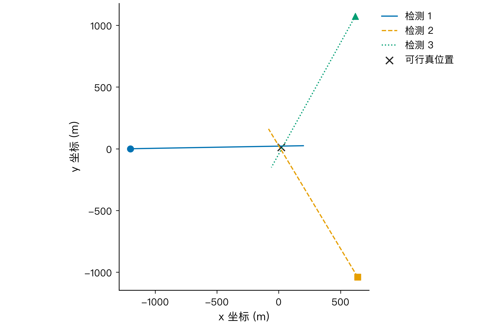
q1.json；3 个构造检测点；确定性计算，无统计推断
逐次增加测向约束压缩可行外包，并核对最终最小包围圆。
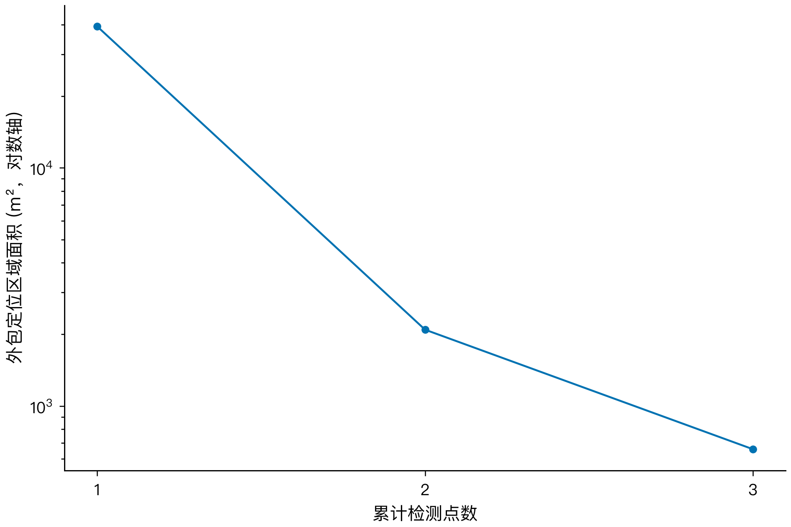
q1.json 的三次测向；相同数据精确计算；确定性计算，无统计推断
D=39 m 不能保证半径20 m内一次清除。
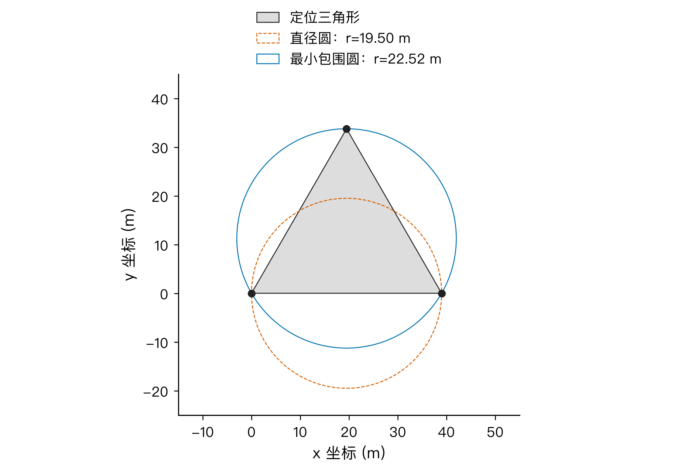
q1.json：直径、支撑点、最小包围圆；确定性计算，无统计推断
一次示向度只限制方位，不给出准确距离。
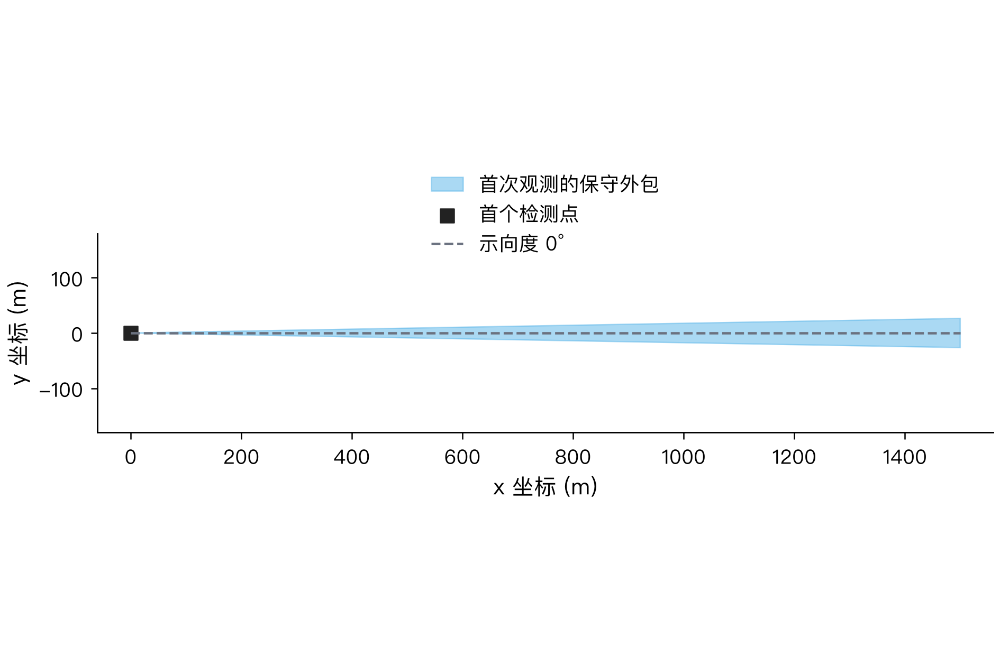
理论误差1.01°、接收上界1500 m；本地构造；确定性计算，无统计推断
在保证全向可接收的候选点内比较几何评分。
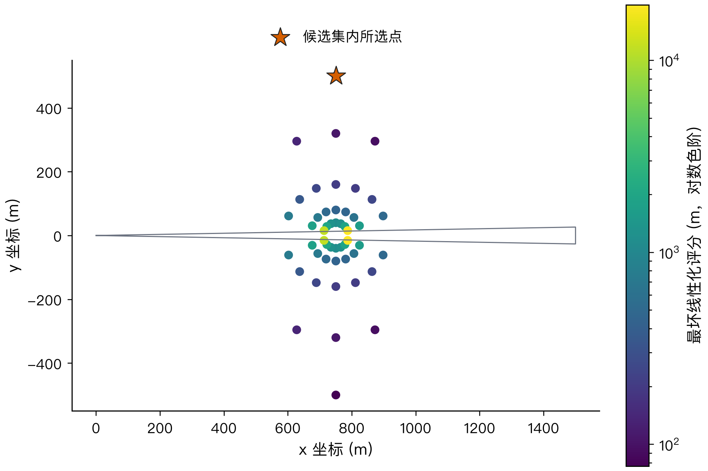
q2_candidates.csv；λ=0.02；颜色是代理评分，非严格误差界；确定性计算，无统计推断
精确后验半径随真位置和误差组合变化，选点代理不等于保证。
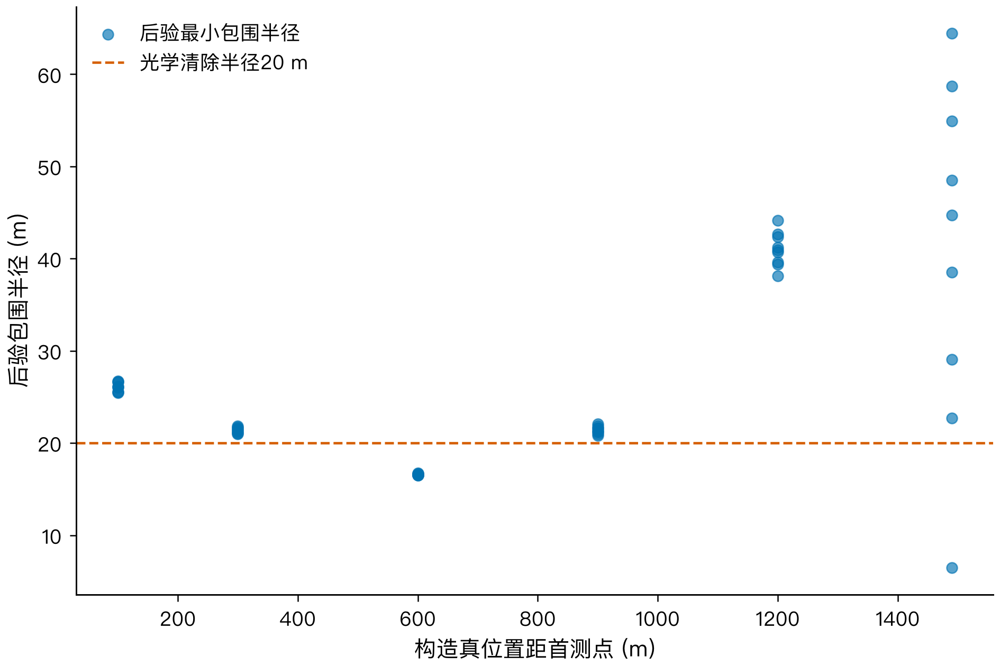
q2_validation.csv；λ=0.02；6个距离×3个首次误差×3个第二次误差=54个确定性组合；散点重合未抖动
展示首个合成全向场景的空间与径向分布。
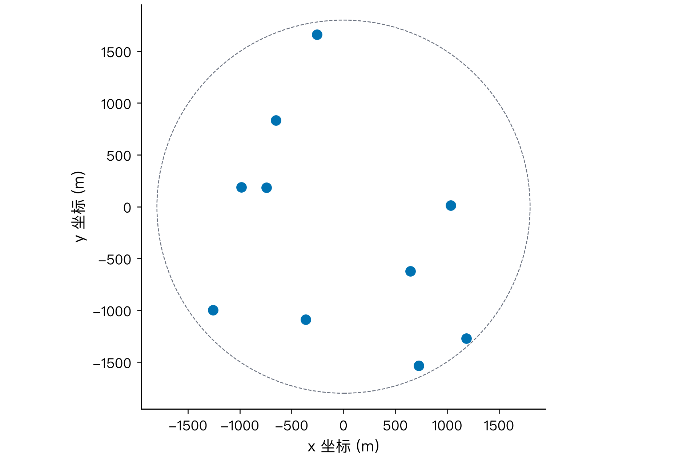
q3_current_trace.json；策略=adaptive_q10_dynamic；仅评价与可视化可读真值；n=10 个本地合成源
完整日志复现搜索、定位和清除移动过程，并展示累计虚拟时间。
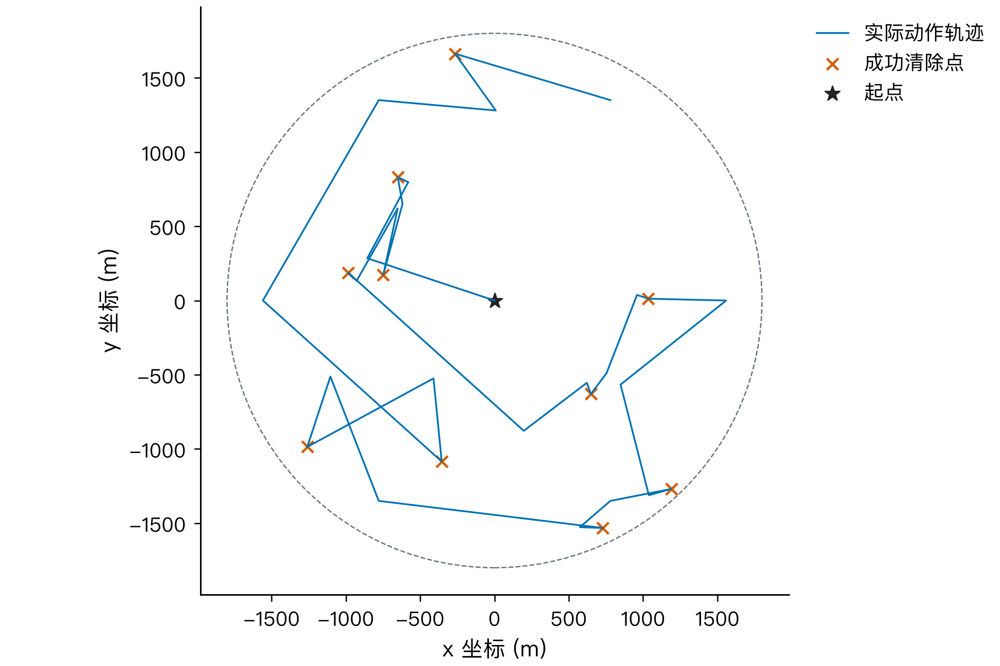
q3_current_trace.json；策略=adaptive_q10_dynamic；种子20260911；重复坐标仅在画线时合并；确定性计算，无统计推断
同一合成场景内对比 adaptive 与动态 q10 站点次序的耗时及逐局差值。
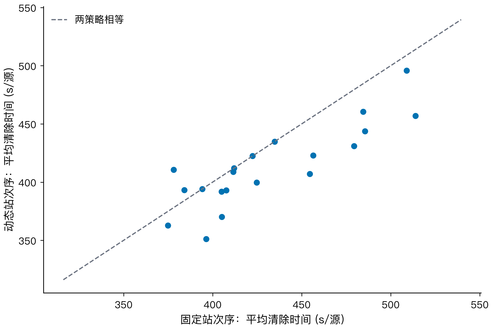
q3_strategy_comparison/runs.csv；q3 非压力场景配对；n=50 个种子；每点一对完整运行；未做显著性检验
说明本地基准场景包含多种定向朝向，不代表官方分布。
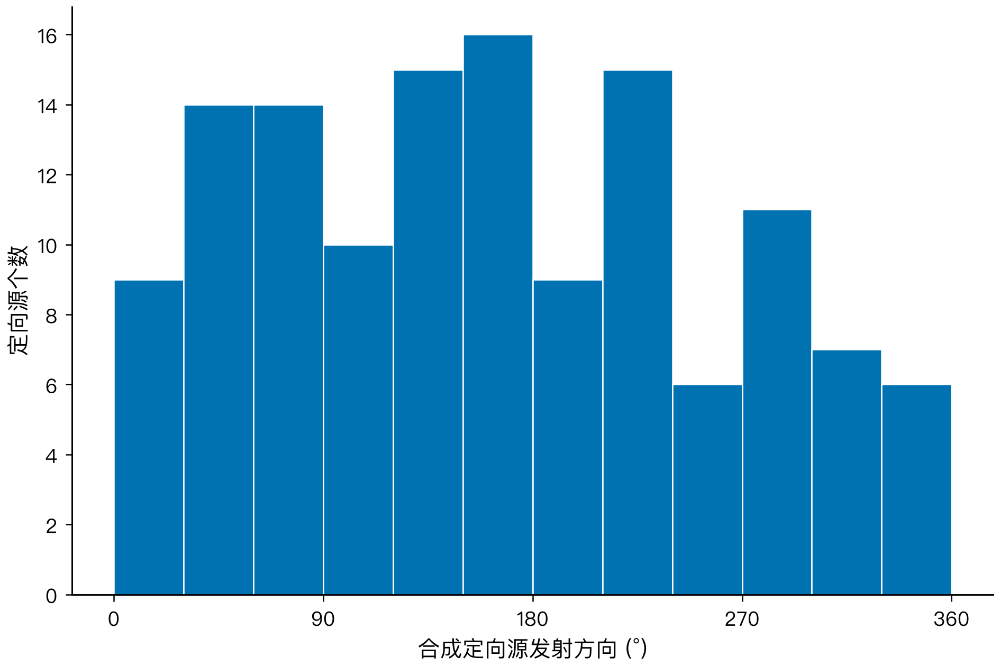
固定种子场景；generate_sources 与 runs.csv 对应；n=132 个合成定向源；30°分箱
完整日志复现搜索、定位和清除移动过程，并展示累计虚拟时间。
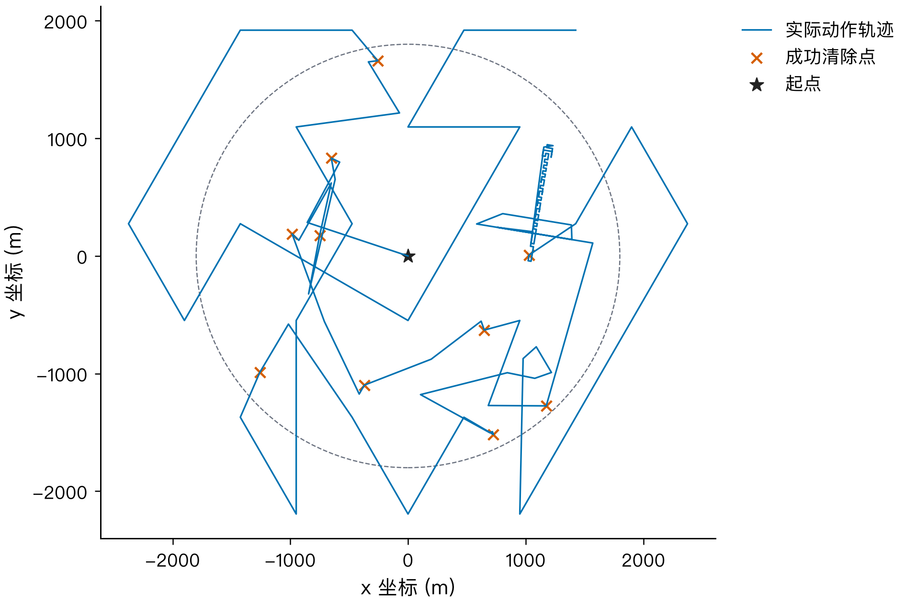
q4_current_trace.json；策略=q4_joint；种子20260911；重复坐标仅在画线时合并；确定性计算，无统计推断
展示定向混合场景耗时的完整分布与不稳定性。
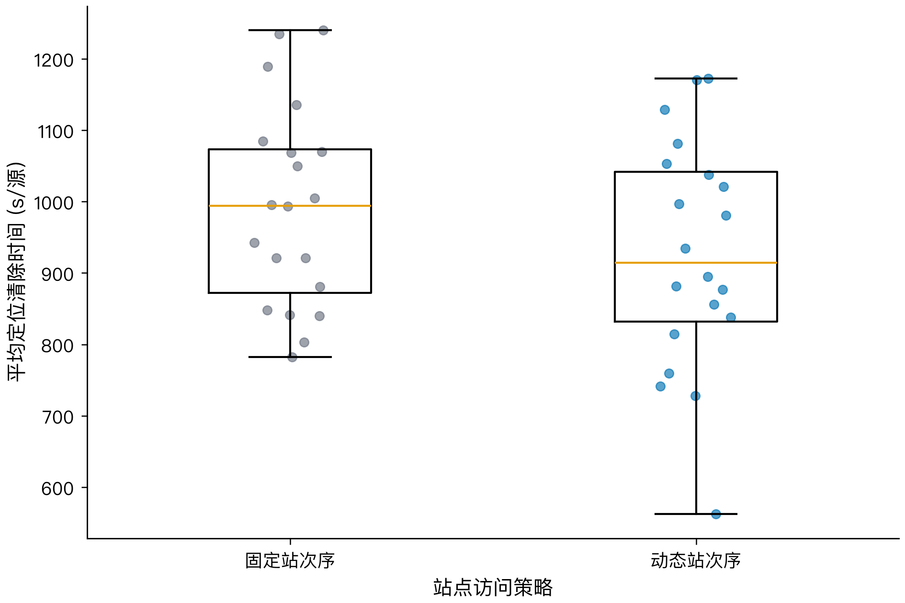
runs.csv；q4非压力场景配对；每组n=20；箱体IQR、中位数线、1.5IQR须、叠加全部原始点；未做显著性检验
展示25站同心环三角覆盖与固定访问路线；相对26站的路程改进由配对实验核验。
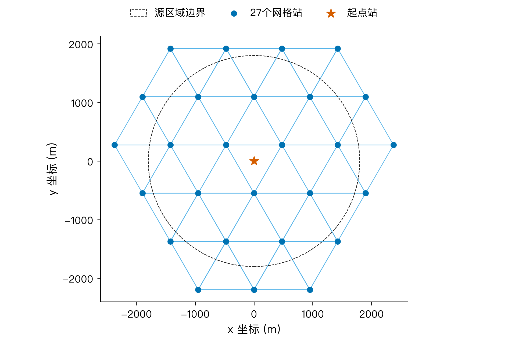
ring25_cover 确定性构造：32个三角形，25站；路线为离线固定的开放路径；确定性计算，无统计推断
相同源配置和动态调度下比较覆盖构造的实测耗时。
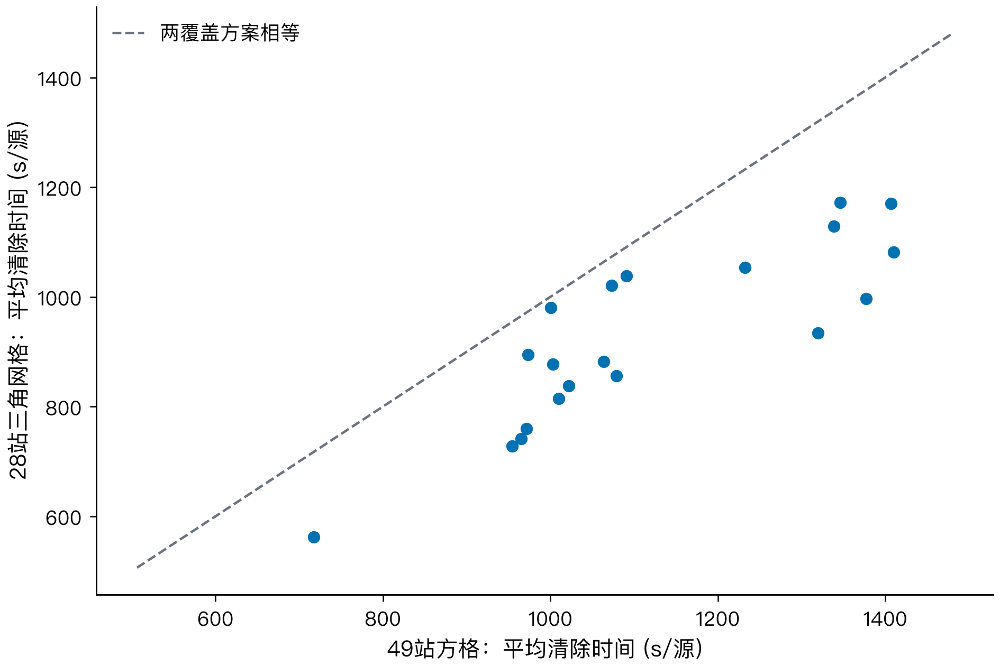
coverage_comparison.csv；相同20个合成种子，定位器和兜底相同；n=20 对完整运行；未做显著性检验
相同源配置下，25站环形联合策略在多数种子中更快。
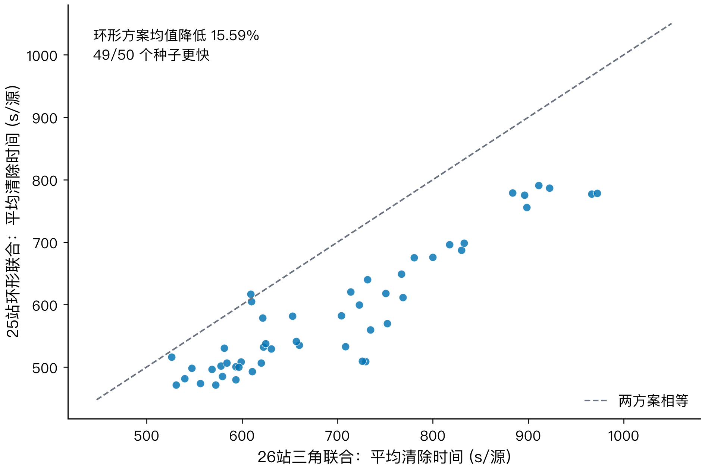
q4_optimization_ring25/runs.csv；50个共同种子；每点为一对完整本地合成运行；虚线为相等线；未做显著性检验